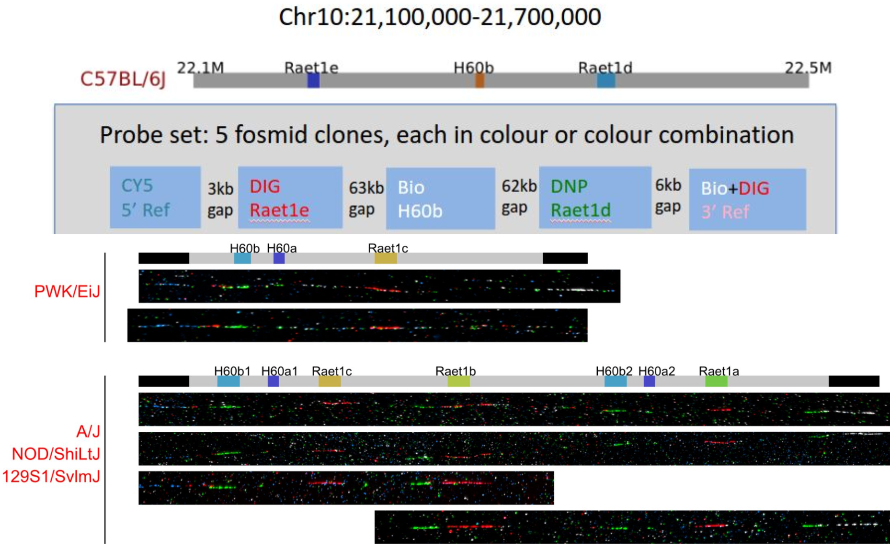
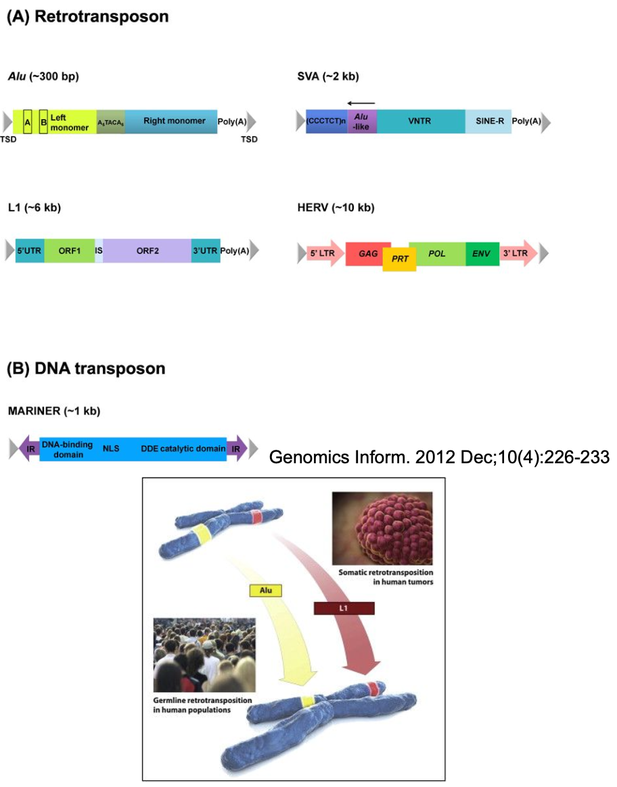
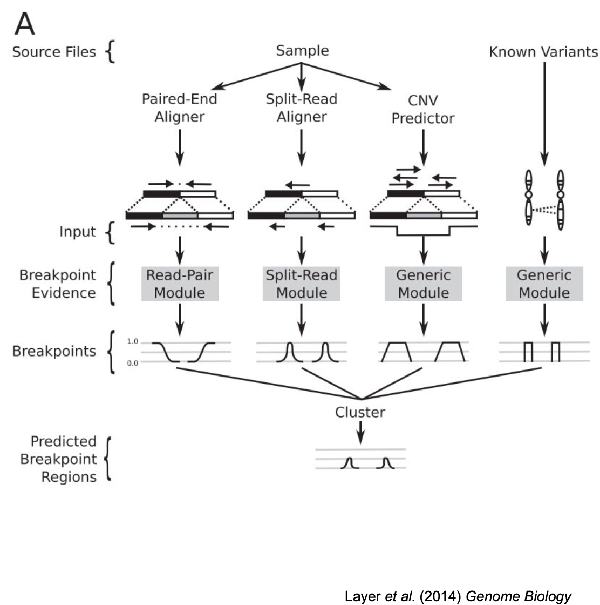
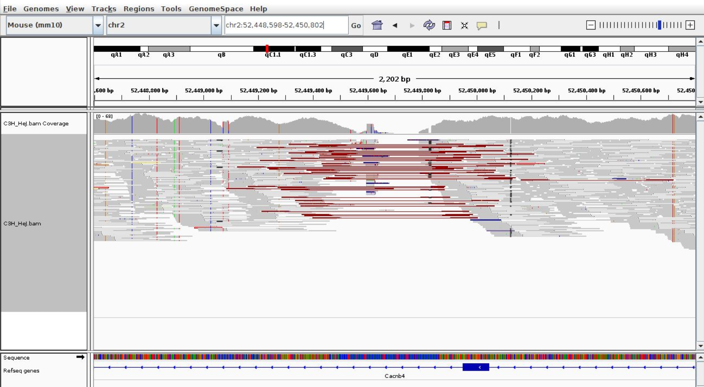
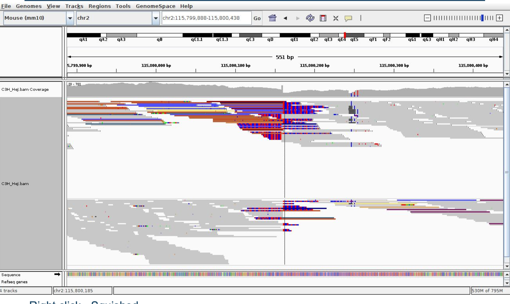

Manual
Genomic structural variation
Genomic structural variation (SV) refers to any rearrangement of chromosome structure and includes alterations such as insertions, deletions, inversions, translocations, and copy number changes. These variations contribute significantly to genetic diversity, evolution, gene function, and phenotypic variation, and they can involve rare variants with large biological effects. Structural variants are also frequent causes of disease, known as genomic disorders, and are associated with both Mendelian conditions and complex traits, including behaviors. For example, an increase in gene dosage due to elevated copy number can have a direct impact on phenotype or disease. Some SVs are complex events, involving multiple types of variation in close proximity. A key concept in SV analysis is the breakpoint, defined as a pair of bases that are adjacent in a sequenced sample genome but not in the reference genome. Detecting structural variation involves a variety of experimental techniques, each with strengths in resolving different SV types and sizes.
Methods for detecting Structural Variants
Experimental approaches
Structural variant (SV) detection can be performed using a range of experimental approaches. Chromosome banding is a classical cytogenetic technique where stained chromosomes from dividing cells are examined under a microscope to detect large-scale abnormalities, such as deletions, duplications, or translocations, based on altered banding patterns. Fluorescence in situ hybridization (FISH) uses fluorescently labeled DNA probes to identify specific loci on chromosomes in both metaphase and interphase cells. It is particularly useful for confirming the presence, absence, or relocation of genomic regions, and can be used alongside data from microarrays or sequencing to validate findings. Microarrays, including array comparative genomic hybridisation (array CGH) and SNP arrays, detect copy number variations (CNVs) and allelic imbalances by comparing hybridization intensities between test and reference genomes. However, microarrays do not provide precise information about SV breakpoints or structural organization.
Sequencing-based approaches
Sequencing-based approaches offer higher resolution for detecting structural variants. Whole-genome sequencing (WGS) allows the identification of SVs by analyzing paired-end reads with discordant alignments, which signal breakpoints in the genome. This method is capable of detecting both copy-number and copy-neutral SVs. Third-generation sequencing technologies, such as those from PacBio or Oxford Nanopore, generate long reads (several kilobases in length), which can span complex or repetitive regions, enabling more accurate detection and mapping of SVs. Long-read sequencing is particularly effective for identifying complex rearrangements and resolving ambiguous alignments that are challenging for short-read platforms. These sequencing approaches have become essential for comprehensive SV discovery and characterization.
Fiber-FISH (fluorescence in situ hybridization on DNA fibers) is a high-resolution cytogenetic technique used to visualize the physical arrangement and organization of genomic regions along stretched DNA molecules. By using color-coded fluorescent probes that hybridize to specific sequences, Fiber-FISH enables direct visualization of structural variation, such as insertions, deletions, duplications, or gene order changes across individuals or strains.


SV types and NGS paired-end sequencing
Different types of structural variation (SV)—deletion, insertion, inversion, and translocation—can be detected using next-generation sequencing (NGS) paired-end reads. In paired-end sequencing, each DNA fragment is sequenced from both ends, producing two reads with an expected orientation and insert size. SVs disrupt these expectations in predictable ways. For example, a deletion results in paired reads mapping farther apart than expected, while an insertion causes them to map closer together. In an inversion, read pairs may map with incorrect orientation (e.g., both pointing in the same direction), and in a translocation, each read may map to different chromosomes or distant loci. These abnormal mapping patterns serve as key indicators for identifying SVs in genome sequencing data.

Retrotransposition
Retrotransposition refers to the movement of transposable elements (TEs)—segments of DNA capable of changing their position within the genome. These elements possess a minimal “genome” that allows them to replicate and relocate, often leaving behind molecular relics of ancient viral infections. TEs are a dominant feature of mammalian genomes, comprising 38–45% of rodent and primate genomes, and contributing significantly to genome size. They are classified into Class 1 elements, which move via an RNA intermediate (e.g., LINEs and SINEs), and Class 2 elements, which move via a DNA intermediate. Retrotransposons are potent mutagens, capable of disrupting gene expression, triggering genome rearrangements, and driving evolutionary change through mechanisms such as transduction of flanking sequences. These elements are also species-specific: in humans, common families include Alu, L1, and SVA, while in mice, SINE, LINE, and ERV elements are prevalent.

In the figure above, Panel (A) displays Class I retrotransposons, which mobilize via an RNA intermediate. Alu elements (~300 bp) are primate-specific SINEs made of two similar monomers with a poly(A) tail and target site duplications (TSDs). SVA (~2 kb) is a composite element combining features of SINEs, VNTRs, and Alu-like sequences. L1 (~6 kb) is an autonomous LINE element with two open reading frames (ORF1 and ORF2) that encode proteins for reverse transcription and integration. HERV (~10 kb) are endogenous retroviruses with coding potential for structural (GAG), enzymatic (POL), and envelope (ENV) proteins, flanked by long terminal repeats (LTRs).
Panel (B) shows a Class II DNA transposon (MARINER, ~1 kb) with a DNA-binding domain and a DDE catalytic domain flanked by inverted repeats (IRs). The lower image illustrates retrotransposition events:
Germline retrotransposition, such as Alu and L1 mobilization, contributes to genomic diversity across human populations.
Somatic retrotransposition can occur in specific tissues, such as tumors, where elements like L1 insert into new locations, potentially disrupting gene regulation and contributing to cancer development.
Sources of evidence
Fragment size
Paired-end sequencing provides a valuable source of evidence for detecting various types of structural variations (SVs), including large insertions, deletions, inversions, and translocations. In this approach, both ends of a DNA fragment are sequenced, generating read pairs with a known orientation and expected insert size. When read pairs deviate from these expectations—such as mapping farther apart or closer together than expected, aligning in unexpected orientations, or when one mate is missing—it can signal the presence of an SV. For example, a deletion will cause read pairs to map with increased distance, while inversions or translocations may lead to reads mapping in reversed orientations or to different chromosomes. Thus, read pair analysis is a fundamental strategy for identifying structural rearrangements in genomic data.


Fragment size quality control (QC) is a key method for detecting potential structural variation (SV) in sequencing data. The figure above shows insert size distributions from two BAM files. The left panel displays a tight, unimodal distribution centered around ~450 bp, typical of a well-prepared library with consistent fragment size. In contrast, the right panel shows a bimodal distribution, with an unexpected secondary peak at ~150–200 bp. This deviation suggests the presence of aberrant fragment sizes, which may reflect insertions, deletions, or other SVs. Unusual peaks, broader distributions, or multiple modes in insert size profiles are often early indicators of structural rearrangements, contamination, or library preparation artifacts, highlighting the importance of insert size QC in NGS workflows.

Split reads

Split-read alignments provide powerful evidence for identifying structural variation (SV), particularly for pinpointing breakpoints at base-pair resolution. A split read occurs when a single sequencing read spans a structural variant junction and thus aligns in two separate parts to different positions on the reference genome. In the figure, reads at the breakpoint do not align continuously but are soft-clipped or partially aligned, indicating a disruption in the reference sequence. These reads suggest the presence of an insertion, deletion, or other rearrangement. However, due to sequencing and alignment inaccuracies, the precise breakpoint may not always be clear, resulting in slight ambiguity in breakpoint localization.
Read depth

BreakDancer
BreakDancer is a structural variant (SV) caller that uses paired-end read information to detect a wide range of SV types, including deletions, insertions, inversions, as well as intra- and interchromosomal translocations. It takes a BAM file as input and begins by analyzing a subset of reads to estimate the mean and standard deviation of the fragment size for each sequencing library. The algorithm then systematically scans each chromosome to identify anomalous read pairs—those that deviate in orientation or insert size from expected values. These anomalies are grouped into interconnected clusters, which are then classified into SV types. The final output is a text file, listing one SV event per line, including its type, coordinates, and supporting evidence. Users can apply filters based on the minimum number of supporting reads, quality score, or SV type to refine the call set for downstream analysis.
LUMPY

LUMPY is a flexible and probabilistic structural variant (SV) caller that integrates multiple sources of alignment evidence—including read pairs, split reads, read depth, and even user-supplied data—into a unified discovery process (Layer et al., 2014). It is designed with modular components, each responsible for parsing and mapping a specific type of alignment evidence to breakpoint intervals. These intervals represent genomic positions where structural rearrangements likely occur. LUMPY identifies clusters of overlapping evidence and calculates the probability of each SV event based on the combined support from all evidence types. This integrative approach allows LUMPY to detect a wide variety of SVs with high sensitivity and specificity, outperforming tools that rely on a single evidence type.
Reference: Layer RM, Chiang C, Quinlan AR, Hall IM. (2014). LUMPY: a probabilistic framework for structural variant discovery. Genome Biology, 15(6):R84. https://doi.org/10.1186/gb-2014-15-6-r84
Structural variation visualisation
Structural variant (SV) visualisation is inherently more complex than viewing single nucleotide polymorphisms (SNPs) or small indels due to the larger genomic span and complex read patterns involved. Visualising SVs often requires inspection of several hundred to thousands of base pairs to identify features such as discordant read pairs, split reads, and soft-clipped bases, which help in refining breakpoint positions and understanding the SV type. Interpreting these patterns is essential not only for confirming variant calls but also for identifying potential alignment artifacts or false positives. Among the available NGS visualisation tools, IGV (Integrative Genomics Viewer) from the Broad Institute is widely used due to its intuitive interface and powerful display features. IGV requires a BAM file with aligned reads and the corresponding reference genome in FASTA format. To effectively interpret different SV types, viewing settings in IGV—such as coloring by read strand, showing soft clips, or displaying insert size—should be tailored appropriately, often guided by best practice notes or visual examples.




Structural variants and long read sequencing
Long-read sequencing technologies, such as those from Oxford Nanopore and Pacific Biosciences, enable the sequencing of single DNA molecules spanning 10–20 kilobases or more—lengths that routinely exceed the size of most transposable elements and common repeats. This makes long-read platforms particularly powerful for structural variant (SV) detection, as individual reads can often span entire SVs, including both breakpoints, allowing for highly accurate identification and characterization of complex rearrangements that short reads often miss. However, these benefits come with new challenges: long reads typically have higher error rates (ranging from 5% to 20%), which can introduce alignment artifacts and complicate downstream variant calling. As a result, specialized alignment algorithms and error correction tools are required to fully harness the potential of long-read data for SV analysis.
NGMLR (Next-Generation Mapping and Long Read aligner)
NGMLR (Next-Generation Mapping and Long Read aligner) is a specialized aligner designed to accurately map long, error-prone reads—such as those from PacBio and Oxford Nanopore platforms—while preserving structural variant (SV) signals. Unlike traditional aligners, NGMLR uses a convex gap-cost scoring model, which penalizes the extension of long insertions and deletions less severely than short ones. This scoring approach is well-suited to long-read data because it reduces the likelihood of breaking large SVs into multiple small errors, thereby improving alignment accuracy across large structural events such as insertions, deletions, and inversions. NGMLR has been shown to improve the sensitivity and precision of SV detection when paired with long-read SV callers like Sniffles.
Reference: Sedlazeck FJ, Rescheneder P, Smolka M, Fang H, Nattestad M, von Haeseler A, Schatz MC. (2018). Accurate detection of complex structural variations using single-molecule sequencing. Nature Methods, 15(6), 461–468. https://doi.org/10.1038/s41592-018-0001-7

Sniffles
Sniffles is a structural variant (SV) caller specifically designed to detect SVs from long-read sequencing data generated by platforms such as PacBio and Oxford Nanopore. It leverages long-read alignments to accurately identify a wide range of SV types, including insertions, deletions, inversions, duplications, and translocations. Sniffles uses a multi-evidence approach, integrating split-read, read pair, and read depth signals to increase the accuracy of SV detection, even in repetitive or complex regions. It is widely used in long-read genomics pipelines due to its speed, scalability, and high sensitivity.
Reference: Sedlazeck FJ, Rescheneder P, Smolka M, et al. (2018). Accurate detection of complex structural variations using single-molecule sequencing. Nature Methods, 15(6), 461–468. https://doi.org/10.1038/s41592-018-0001-7

Evaluating structural variant (SV) calls
Evaluating structural variant (SV) calls is essential to ensure the reliability of genomic analyses, and involves balancing sensitivity (true positive rate) and specificity (true negative rate). High-quality SV detection aims to minimize both false positives and false negatives. To assess sensitivity, researchers compare called SVs to a set of known or validated variants, often from benchmark datasets or previously characterized samples. For specificity, a subset of SV calls—typically chosen at random—can be experimentally validated using independent methods such as PCR or long-read sequencing. Receiver operating characteristic (ROC) curves are useful tools for visualizing the trade-off between sensitivity and specificity as SV calling parameters are adjusted, helping optimize performance and improve confidence in variant interpretation.